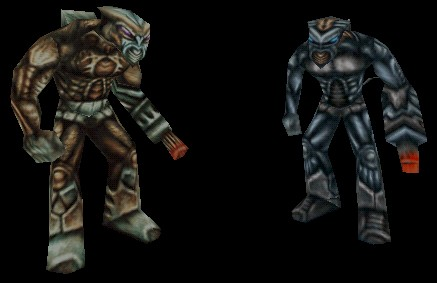

Mercenary

A standard Mercenary on the left, and a Mercenary Elite on the right. The average Mercenary stands only slightly taller than a normal-sized Human. |
The Mercenaries could be considered as something of a "third pary" in the Unreal universe. While hostile to intruders, thieves, and spies, Mercenaries are friendly to pretty much anyone who openly attacks their more dangerous enemies, such as the Skaarj. However, it is rumored that a few Mercenaries and a few small clans of Skaarj have formed a shaky alliance in the name of mutual profit. However, most Mercenaries can be considered neutral characters or even allies by Humans.
With their advanced knowledge of electrical and chemical engineering, many Human corporations will compete with each other for the privilege of trading with the Mercenaries for pieces of their technology. Some Human corporations even turn a profit by using Mercenary-supplied blueprints to manufacture technology for the Mercenaries.
When on duty, Mercenaries are expected to be armed with a multi-function arm weapon. Completely covering the right arm up to the elbow, this weapon serves as both a gatling gun and a rocket launcher. On the defensive side, almost all Mercenaries have short-duration invulnerability shields that protect them from all forms of damage and momentum changes. However, the Mercenaries stationed at a base near Sharuk Crossing on the Nali homeworld have had to do without this asset for quite some time now.
Mercenaries Elite are identified by their blue skin and more powerful rocket launcher. Also Mercenaries Elite have a shield accessory that leaves a hole in the shield at the end of their weapon's barrel, giving them the ability to continue firing at their targets even when their invulnerability shield is active.
Remember, FollowingMercenaries can be found in Operation: Na Pali. These are quite friendly mercenaries that are even willing to follow the player around. Read their story [here].
Properties
Mercenaries have several properties that can be altered by mappers, other than the default sounds.
- PunchDamage
- When the Mercenary hits a target in melee range with his fist, then the damage is based on this value.
- bButtonPusher
- This is very similar to the bButtonPusher variable for a Skaarj. Just set this variable to True and place the Mercenary in front of a console of some sort. The mercenary will use his exposed hand to manipulate the console. Remember that when a Mercenary is hard at work, he will not be easily distracted by other things going on around him, even if an intruder walks past him.
- bTalker
- This is very similar to the bDicePlayer variable for a Krall. Gather together a team of Mercenaries into a circle, and set bTalker to True for each of them. When the player encounters them, they will be standing in a circle, in the middle of a deep conversation.
- bSquatter
- This should be used in conjunction with bTalker. Talking Mercenaries with this set to True will be squatting as they hold their conversation.
- bHasInvulnerableShield, bCanFireWhileInvulnerable
- These variables determine if a Mercenary has an invulnerability shield, and if the Mercenary can continue to use his weapons while his shield is active.
- invulnerableCharge
- This is the number of seconds in which a Mercenary's shield will remain active before automatically switching itself off.
Discussion
UsAaR33: Hah.. Writing a story of some kind? And trying to simultaneously cover Unreal I, RTNP, and ONP? Well, I just added my own quick link